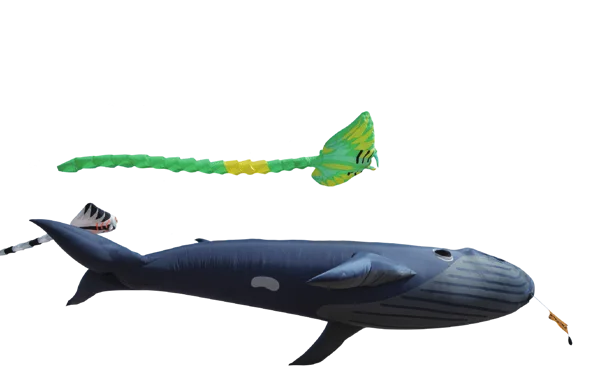
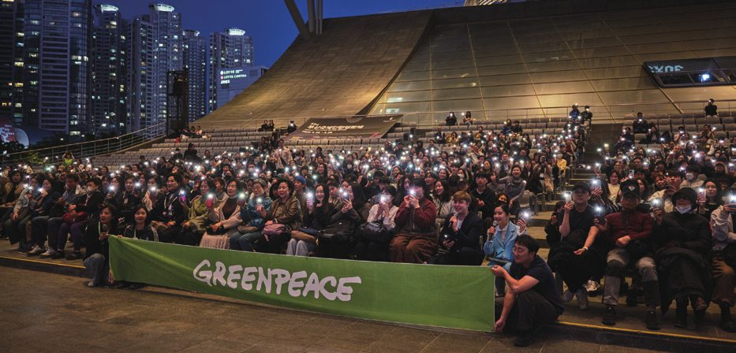
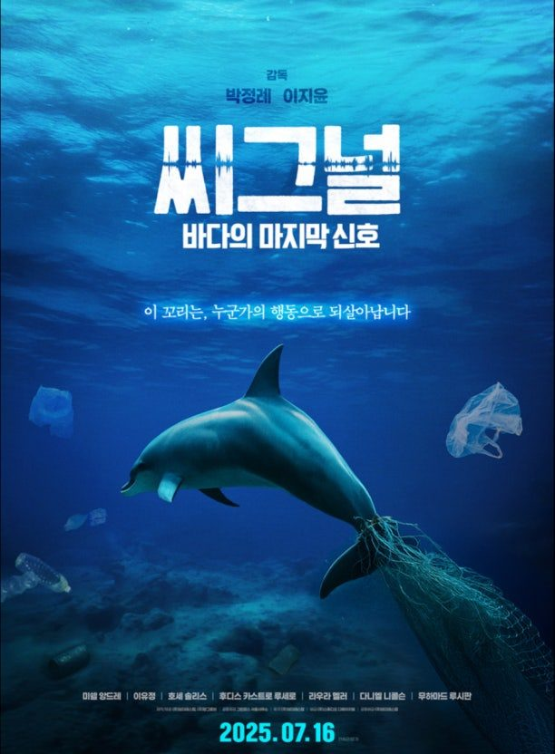
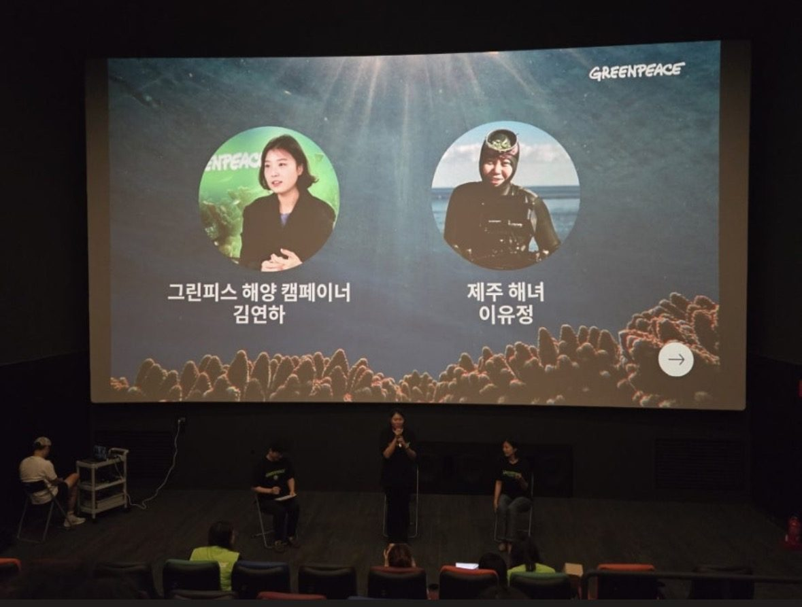

그린피스 동아시아지부 · 2025 연차보고서
책을 눌러 넘겨 보세요 · 준비된 장 2개
어느 나라의 것도 아닌 바다를 지키기 위한 20년.
그리고 그 마지막 한 걸음이 된 2025년의 이야기입니다.
해안에서 바깥으로 이어지는 바다는 가까운 나라가 관리합니다.
공해는 누구의 관할도 아니기에, 남획과 개발의 위협에 그대로 놓여 있습니다.
공해 약 60%: 면적 기준, 그린피스 국제본부 보고서의 61%를 반올림
이해를 돕기 위한 그림입니다. 앞바다는 해안에서 약 370km를 어림해 그렸고 실제 경계와 다릅니다.
이 1%를 바꾸기 위해
바다 밖에서 사람들이 움직였습니다
2025년, 서울에서도
글로벌 해양조약(BBNJ)은 60개국이 비준해야 발효됩니다. 그린피스 서울사무소는 한국이 그 숫자에 들어가도록 한 해를 보냈습니다.
시민사회 연대체와 함께 국회에서 비준 촉구 기자회견을 열고, 외교부와 관련 의원실을 만나 공해 보호구역 확대의 필요성과 조약 발효의 시급성을 전달했습니다.
제3차 유엔해양총회를 앞두고 다양한 이해관계자, 시민들과 캠페인을 이어온 결과, 한국 정부가 조약 비준에 동참했습니다.

제10차 아워오션컨퍼런스(OOC)를 계기로 부산 영화의전당에서 600여 명의 시민과 해양 다큐멘터리 〈씨그널(SEAGNAL)〉 상영회를 열고, 20여 개 해양 시민사회 단체와 공동 캠페인을 진행했습니다.

국제해저기구(ISA) 총회에 맞춰 한국 정부를 포함한 회원국들에 심해 채굴 중단과 심해 생태계 보호 강화를 촉구하는 성명을 발표했습니다.
3,000여 명 시민의 후원으로 제작된 다큐멘터리 상영회를 국회 시사회에 이어 전국으로 넓혔습니다.


상영 후 관객과의 대화에는 그린피스 해양 캠페이너 김연하 님과 제주 해녀 이유정 님이 함께했습니다.
조약 발효에 필요한 숫자가 채워졌습니다.
20년에 걸친 캠페인 끝에, 공해에 해양보호구역을 지정할 수 있는 최초의 법적 기반이 마련되었습니다.
2030년까지 전 세계 바다의 30%를 보호하자는 ‘30x30’ 목표. 조약 발효로 여기에 속도가 붙었습니다.
연차보고서 24~25쪽의 지출 내역으로, 운영비까지 숨김 없이 계산해 드립니다.